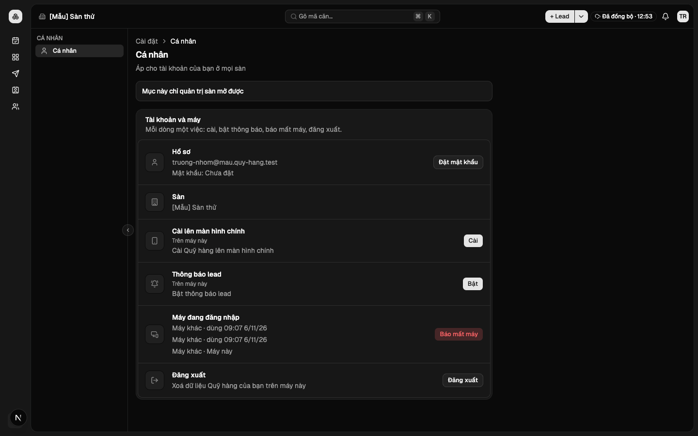
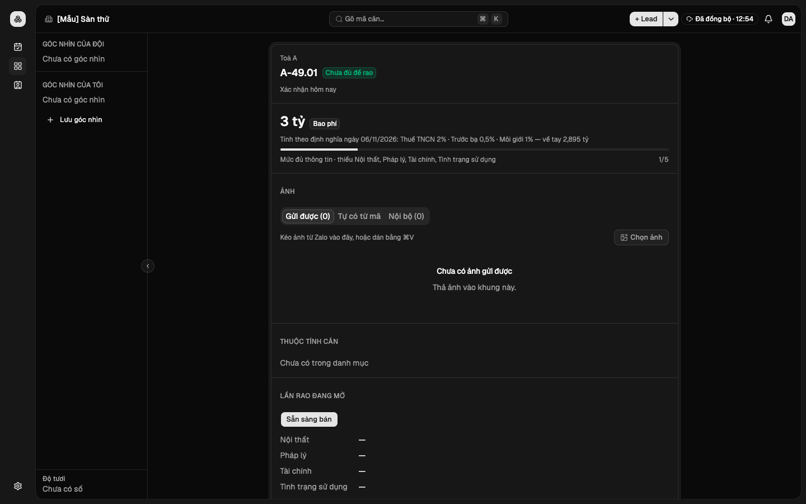
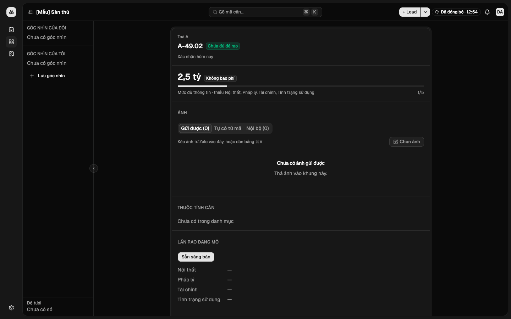
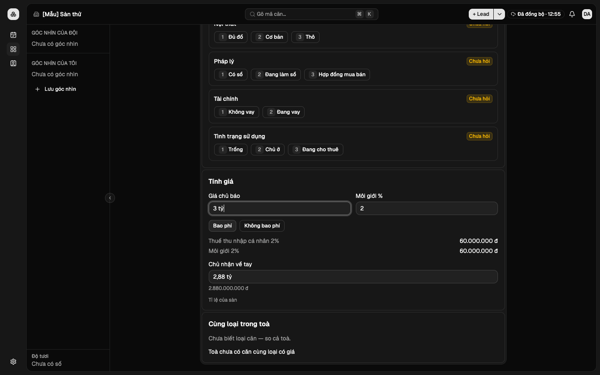

"Quản trị sàn đặt tỉ lệ thuế phí và định nghĩa «bao phí» của sàn ở mục «Thuế phí» của Cài đặt sàn; giá bao phí ghi sau lúc đổi mang định nghĩa mới, giá đã lưu giữ định nghĩa lúc tính kèm ngày; người xem giá thấy giá ấy tính theo định nghĩa ngày nào; sàn khác không bị ảnh hưởng"
Vì sao làm
Quản trị sàn đặt tỉ lệ thuế phí và định nghĩa «bao phí» của sàn; giá đã lưu giữ nguyên kèm ngày tính
Đã hứa
- AC-1 — — Màn Thuế phí hiện đủ ba khoản, định nghĩa và nguồn.
- AC-2 — — Lưu một lần qua lối chung, có nhật ký; sai thì không ghi. (cross-layer)
- AC-3 — — Vai khác không đặt được thuế phí.
- AC-4 — — Mỗi giá bao phí mang định nghĩa của sàn lúc ghi, ở mọi lối; giá đã lưu không đổi. (cross-layer)
- AC-5 — — Giá ghi trước hàng này có dấu định nghĩa mặc định.
- AC-6 — — Sàn khác không bị ảnh hưởng.
- AC-7 — — Người xem giá thấy giá tính theo định nghĩa ngày nào. (cross-layer)
- AC-8 — — Màn cuộc gọi tính theo định nghĩa hiện hành của sàn. (cross-layer)
- AC-9 — — Lõi tính theo tập khoản; mặc định ở cơ sở dữ liệu khớp lõi.
- AC-10 — — Điều đang đúng đã ghi.
Thiết kế
docs/superpowers/specs/2026-11-06-thue-phi-design.md
Quyết định
- 2026-11-06 · Máy · approach · S1 — Đã tra tri thức: Quản trị sàn đặt tỉ lệ thuế phí và định nghĩa «bao phí» của sàn; giá đã lưu giữ nguyên kèm ngày tínhKho đã khai tri_thuc — bước thiết kế tra trang trước khi chọn.
- 2026-11-06 · Máy · approach · S1 — Màn Thuế phí lưu qua lối chung PATCH /api/v1/company/settings, chỉ gửi khoá đã đổi; không thêm bảng cấu hình hay lối ghi riêng.Sổ điểm #8–#11 đã mở với cột màn 49, lối chung đọc/đổi mọi điểm giá trị đơn đã mở và ghi nhật ký (packages/api/src/settings/store.ts).
- 2026-11-06 · Máy · approach · S1 — Dấu định nghĩa đóng ở cơ sở dữ liệu: bảng listing_price_fee_basis do trigger AFTER INSERT trên listing_events ghi cho mọi sự kiện price_changed bao phí (migration 050), không ghi ở API.Giá được ghi từ năm lối (sửa trên ô, cuộc gọi, nhập file, hoàn tác nhập, đồng bộ — packages/api/src/listings, imports, imports/undo, sync); lõi và lối ghi của hàng nằm trong vùng hàng 46 đang mở.
- 2026-11-06 · Máy · approach · S1 — Sự kiện giá bao phí ghi trước hàng 49 được điền dấu mặc định sản phẩm với ngày tính bằng lúc ghi sự kiện.Trước hàng 49 không màn nào đọc cấu hình phí của sàn — máy tính cuộc gọi và mọi lần tính đều dùng TI_LE_BAO_PHI_MAC_DINH (packages/core/src/pricing/ve-tay.ts).
- 2026-11-06 · Máy · descope · S1 — KHÔNG hiện ngày tính trên Bảng hàng và KHÔNG nối ngưỡng hỏi lại khi đổi giá (#7) ở vòng này.Bảng hàng và sửa trên ô (apps/web/src/app/(app)/inventory/**) là vùng hàng 46 trang-thai-rieng đang chờ ký.
- 2026-11-06 · Máy · descope · S1 — KHÔNG quy về tay bằng dấu riêng từng căn ở so giá toà; vòng này dùng định nghĩa hiện hành của sàn cho cả máy tính và so giá.So giá đọc danh sách căn cùng toà từ màn cuộc gọi (apps/web/src/app/(app)/units/call/cuoc-goi.tsx); lấy dấu từng căn cần mở rộng lối đọc của Hôm nay/cuộc gọi.
- 2026-11-06 · Máy · approach · S1 — Hỏi-1 · Thuế thu nhập cá nhân 2% và lệ phí trước bạ 0,5% giữ đúng số luật, màn hiện «theo luật» không ô sửa; khoảng sổ giữ 2–2 và 0,5–0,5. Khuyến nghị: duyệt như vậy.Tra 06/11: Điều 14 Luật Thuế TNCN 2025 (hiệu lực 01/7/2026) giữ 2%; Điều 8 Nghị định 10/2022 (sửa bởi 175/2025) giữ 0,5% — sổ #10, #11 ghi «kiểm lại ở hàng 49».
- 2026-11-06 · Máy · approach · S1 — Hỏi-2 · Bao phí gồm tập con của ba khoản cố định ở lõi (thuế TNCN, lệ phí trước bạ, môi giới); sàn bật tắt từng khoản, không thêm khoản riêng. Khuyến nghị: duyệt như vậy.Sổ #8 khai fee.inclusion là set của ba giá trị; luật 12 cần nghĩa chuẩn để quy về tay (ADR-0022 lý do giữ cứng «nghĩa chuẩn để so»).
- 2026-11-06 · Máy · descope · S1 — bỏ design-pass — màn đi khuôn sẵn cai-dat-san như màn mẫu Luật chia lead, dòng phụ hồ sơ căn là một dòng chữ; ảnh màn thật ra ở lượt chấm ui-check.design/patterns/cai-dat-san.md và màn hàng 48 phủ mọi ô của màn; hàng 48 đã bỏ design-pass cùng lý do.
- 2026-11-06 · Máy · approach · S1 — Sự kiện giá bao phí ghi trước hàng 49 được điền dấu mặc định sản phẩm với ngày tính bằng lúc ghi sự kiện.Trước hàng 49 không màn nào đọc cấu hình phí của sàn — mọi lần tính dùng TI_LE_BAO_PHI_MAC_DINH (packages/core/src/pricing/ve-tay.ts).
- 2026-11-06 · Máy · approach · S1 — Dấu định nghĩa đóng ở cơ sở dữ liệu: bảng listing_price_fee_basis do trigger AFTER INSERT trên listing_events ghi cho mọi sự kiện price_changed bao phí (migration 050), định nghĩa là định nghĩa của sàn đang áp lúc giá vào máy chủ.Luật 13 đòi định nghĩa của sàn lúc tính; năm lối ghi giá (packages/api/src/listings, imports, imports/undo, sync) và máy khách ngoại tuyến cùng đi qua một chỗ duy nhất là bảng sự kiện.
- 2026-11-06 · Máy · approach · S1 — Hỏi-3 · Sự kiện giá bao phí ghi trước hàng 49 được điền dấu mặc định sản phẩm với ngày tính bằng lúc ghi sự kiện. Khuyến nghị: duyệt như vậy.«Bao phí» mặc định gồm cả ba khoản đã chốt 29/10 (Tham chiếu §13) và chưa sàn nào đổi được qua màn trước hàng 49; máy tính cuộc gọi chỉ sửa môi giới cho một lần tính, không lưu.
- 2026-11-06 · Máy · descope · S1 — Hỏi-4 · KHÔNG hiện ngày tính trên Bảng hàng và KHÔNG nối ngưỡng hỏi lại khi đổi giá (#7) ở vòng này; «người xem giá» của ngưỡng là hồ sơ căn và màn cuộc gọi. Khuyến nghị: duyệt như vậy, Bảng hàng làm sau khi hàng 46 vào nhánh chính.Bảng hàng và sửa trên ô (apps/web/src/app/(app)/inventory/**) là vùng hàng 46 trang-thai-rieng đang chờ ký.
- 2026-11-06 · Máy · descope · S1 — Hỏi-5 · KHÔNG quy về tay bằng dấu riêng từng căn ở so giá toà; vòng này dùng định nghĩa hiện hành của sàn cho cả máy tính và so giá. Khuyến nghị: duyệt như vậy.So giá đọc danh sách căn cùng toà từ màn cuộc gọi (apps/web/src/app/(app)/units/call/cuoc-goi.tsx); lấy dấu từng căn cần mở rộng lối đọc của Hôm nay/cuộc gọi.
- 2026-11-06 · Người · seal · gate1 —
- 2026-11-06 · Người (Manh Phan) · approach · S2 — Gate 1.5: chủ kho duyệt kế hoạch thi công sáu việc (docs/superpowers/plans/2026-11-06-thue-phi.md).Hồ sơ T3 — kế hoạch phải được người duyệt trước khi viết mã; người gõ «duyệt kế hoạch thue-phi».
- 2026-11-06 · Máy · fix · S3 — E11 (chấm khuôn) khai đạt có giới hạn mã 1 kèm bài rào E13, chép nếp hàng 48: kit 2.37.0 báo oan trang Thuế phí «thuộc hai nhóm màn» vì bộ đọc không xét ngoai_le.design-floor-khuon.mjs --kiem thoát 1 chỉ với dòng lệch của settings/fees/page.tsx, trang đã khai ngoai_le ở design/patterns/trang-tam.md; hàng 48 gặp đúng ca này (kit#480).
- 2026-11-06 · Máy · fix · S3 — Lối đọc dấu định nghĩa xét quyền đọc hàng như GET /listings/{listingId}: người có Bảng hàng, hàng đã gỡ, trục «Chỉ tôi» — người khác nhận 404 như hàng không có.Bài «mọi đường chạm hàng nằm trong bảng bốn đường» (packages/api/test-db/visibility.test.ts) bắt lối mới; trục «Chỉ tôi» chặn ở API (K5), luật theo dòng không chặn.
- 2026-11-06 · Máy · fix · S3 — Ô môi giới của màn Thuế phí không kẹp min/max: số ngoài khoảng ở lại để câu lỗi hiện và Lưu khoá; ô đọc và viết số theo vi-VN (dấu phẩy).Chạy thử E2a: ô kẹp 6 về 5 khi rời ô nên lenhLuu không thấy số sai và Lưu ghi 5 (apps/web/src/app/(app)/settings/fees/bang-thue-phi.tsx).
Bằng chứng
Các eval
| Eval | Tiêu chí | Loại | Verdict | run_id | verified_at |
|---|---|---|---|---|---|
| E1 | AC-1 | ui-check | PASS | minted-thue-phi-E1-r1 | 2026-11-06T05:51:16Z |
| E2a | AC-2 | ui-check | PASS | minted-thue-phi-E2a-r1 | 2026-11-06T05:51:16Z |
| E2b | AC-2 | test | PASS | minted-thue-phi-E2b-r1 | 2026-11-06T05:51:16Z |
| E3 | AC-3 | test | PASS | minted-thue-phi-E3-r1 | 2026-11-06T05:51:16Z |
| E3b | AC-3 | ui-check | PASS | minted-thue-phi-E3b-r1 | 2026-11-06T05:51:16Z |
| E4 | AC-4 | test | PASS | minted-thue-phi-E4-r1 | 2026-11-06T05:51:16Z |
| E5 | AC-5 | test | PASS | minted-thue-phi-E5-r1 | 2026-11-06T05:51:16Z |
| E6 | AC-6 | test | PASS | minted-thue-phi-E6-r1 | 2026-11-06T05:51:16Z |
| E7a | AC-7 | test | PASS | minted-thue-phi-E7a-r1 | 2026-11-06T05:51:16Z |
| E7b | AC-7 | test | PASS | minted-thue-phi-E7b-r1 | 2026-11-06T05:51:16Z |
| E7c | AC-7 | ui-check | PASS | minted-thue-phi-E7c-r1 | 2026-11-06T05:51:16Z |
| E8 | AC-8 | test | PASS | minted-thue-phi-E8-r1 | 2026-11-06T05:51:16Z |
| E8b | AC-8 | ui-check | PASS | minted-thue-phi-E8b-r1 | 2026-11-06T05:51:16Z |
| E9 | AC-9 | test | PASS | minted-thue-phi-E9-r1 | 2026-11-06T05:51:16Z |
| E10 | AC-10 | test | PASS | minted-thue-phi-E10-r1 | 2026-11-06T05:51:16Z |
| E11 | AC-1 | script | PASS | minted-thue-phi-E11-r1 | 2026-11-06T05:51:16Z |
| E13 | AC-1 | script | PASS | minted-thue-phi-E13-r1 | 2026-11-06T05:51:16Z |
| E12 | AC-1 | script | PASS | minted-thue-phi-E12-r1 | 2026-11-06T05:51:16Z |
Chi tiết từng eval
PASS E1 · ui-check
AC-1: — Màn Thuế phí hiện đủ ba khoản, định nghĩa và nguồn.
PASS E2a · ui-check
AC-2: — Lưu một lần qua lối chung, có nhật ký; sai thì không ghi. (cross-layer)
PASS E2b · test
AC-2: — Lưu một lần qua lối chung, có nhật ký; sai thì không ghi. (cross-layer)
ℹ duration_ms 116354.132334
PASS E3 · test
AC-3: — Vai khác không đặt được thuế phí.
ℹ duration_ms 116354.132334
PASS E3b · ui-check
AC-3: — Vai khác không đặt được thuế phí.

PASS E4 · test
AC-4: — Mỗi giá bao phí mang định nghĩa của sàn lúc ghi, ở mọi lối; giá đã lưu không đổi. (cross-layer)
ℹ duration_ms 116354.132334
PASS E5 · test
AC-5: — Giá ghi trước hàng này có dấu định nghĩa mặc định.
ℹ duration_ms 114311.06725
PASS E6 · test
AC-6: — Sàn khác không bị ảnh hưởng.
ℹ duration_ms 114311.06725
PASS E7a · test
AC-7: — Người xem giá thấy giá tính theo định nghĩa ngày nào. (cross-layer)
ℹ duration_ms 116354.132334
PASS E7b · test
AC-7: — Người xem giá thấy giá tính theo định nghĩa ngày nào. (cross-layer)
ℹ duration_ms 3010.852916
PASS E7c · ui-check
AC-7: — Người xem giá thấy giá tính theo định nghĩa ngày nào. (cross-layer)



PASS E8 · test
AC-8: — Màn cuộc gọi tính theo định nghĩa hiện hành của sàn. (cross-layer)
ℹ duration_ms 3010.852916
PASS E8b · ui-check
AC-8: — Màn cuộc gọi tính theo định nghĩa hiện hành của sàn. (cross-layer)

PASS E9 · test
AC-9: — Lõi tính theo tập khoản; mặc định ở cơ sở dữ liệu khớp lõi.
ℹ duration_ms 1599.02425
PASS E10 · test
AC-10: — Điều đang đúng đã ghi.
ℹ duration_ms 1599.02425
PASS E11 · script
AC-1: — Màn Thuế phí hiện đủ ba khoản, định nghĩa và nguồn.
11 tệp giao diện ngoài bản đồ
PASS E13 · script
AC-1: — Màn Thuế phí hiện đủ ba khoản, định nghĩa và nguồn.
E13: chỉ có dòng báo oan đã khai: lệch: apps/web/src/app/(app)/settings/fees/page.tsx · thuộc hai nhóm màn: cai-dat-san, trang-tam
PASS E12 · script
AC-1: — Màn Thuế phí hiện đủ ba khoản, định nghĩa và nguồn.
(không có dòng cảnh báo)
Eval không phân biệt (Analyst)
Vòng verify
- Round 1: tất cả eval xanh (E11 đạt có giới hạn, E13 xanh); không có eval trượt.
Tài nguyên
| Khối | Tác tử | Token đầu ra |
|---|---|---|
| S4 round 1 | 26 | 63.471 |
1 lượt chấm · tổng 63.471 token
Giới hạn và ngoài hợp đồng
- Bảng hàng hiện ngày tính của giá — vùng hàng 46 đang mở; Later (Hỏi-4 ở Cổng Phạm vi).
- So giá toà quy về tay bằng dấu riêng từng căn — vòng này dùng định nghĩa hiện hành của sàn (AC-8); Later.
- Giá chủ muốn của lead mang dấu định nghĩa; Later.
- Đầu chủ đặt môi giới riêng từng căn (ghi đè dưới sàn của #9); Later.
- Ngưỡng hỏi lại khi đổi giá (#7, cột màn 49) — người đọc ở Bảng hàng thuộc vùng hàng 46; Later.
- Lệ phí trước bạ tính trên bảng giá đất thay vì giá; Later.
- Tỉ lệ hay định nghĩa ra trang khách — Never (lớp `company_internal`).
- E11 (AC-1) dat-co-gioi-han: ma thoat 1 la ket qua DA KHAI TRUOC cua eval nay, khong phai mot luot truot. Lenh: R="${CLAUDE_PLUGIN_ROOT:-$(node packages/ui-lint/tim-kit.mjs)}" && node "$R/scripts/design-floor-khuon.mjs" --kiem --root .
Giao
chưa ghi quan sát production
Giá trị
- Câu hỏi phép đo trả lời: [đề xuất] đã đạt «Quản trị sàn đặt tỉ lệ thuế phí và định nghĩa «bao phí» của sàn; giá tính sau lúc đổi dùng tỉ lệ mới, giá đã lưu giữ nguyên kèm ngày tính; người xem giá thấy giá ấy tính theo tỉ lệ của ngày nào; sàn khác không bị ảnh hưởng» chưa? — chưa đo
- Kết quả nào là SỐNG: [đề xuất] Quản trị sàn đặt tỉ lệ thuế phí và định nghĩa «bao phí» của sàn; giá tính sau lúc đổi dùng tỉ lệ mới, giá đã lưu giữ nguyên kèm ngày tính; người xem giá thấy giá ấy tính theo tỉ lệ của ngày nào; sàn khác không bị ảnh hưởng — chưa đo
- Kết quả nào là CHẾT: [đề xuất] chưa đạt «Quản trị sàn đặt tỉ lệ thuế phí và định nghĩa «bao phí» của sàn; giá tính sau lúc đổi dùng tỉ lệ mới, giá đã lưu giữ nguyên kèm ngày tính; người xem giá thấy giá ấy tính theo tỉ lệ của ngày nào; sàn khác không bị ảnh hưởng» khi hết timebox — chưa đo
- Timebox: … — chưa đo